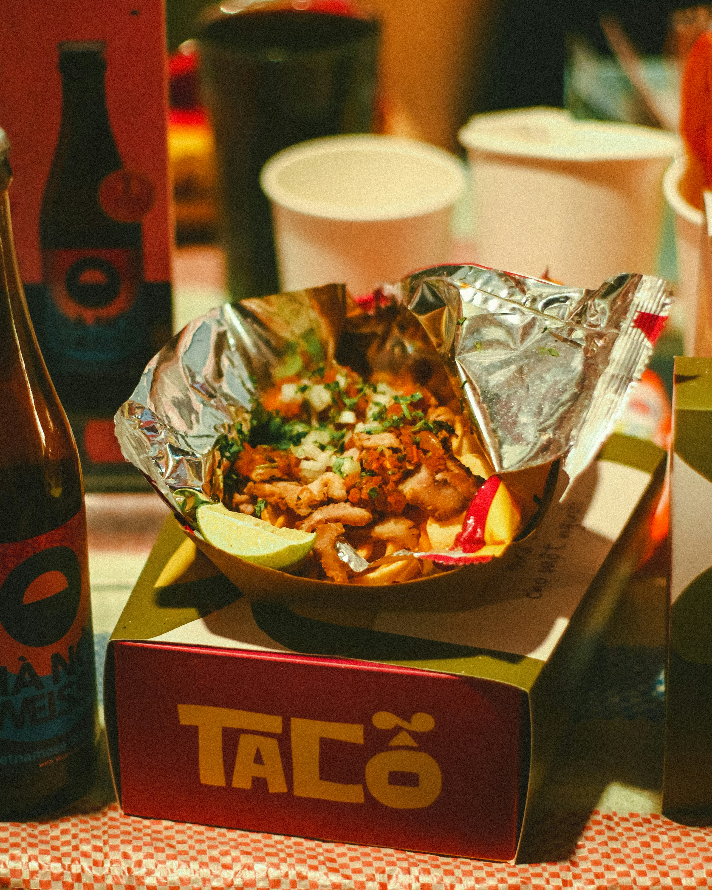

About LST
LST was founded in Our shop was built from a love of taco🌮🌮🌮. We hope our shop adds a unique and interesting place to our littile town.

LST was founded in Our shop was built from a love of taco🌮🌮🌮. We hope our shop adds a unique and interesting place to our littile town.
| Our Tacos | ||
|---|---|---|
| Tacos | Qty | Price |
| Crunchy | 1 | $1.50 |
| 2 | $2.50 | |
| 3 | $3.25 | |
| Soft | 1 | $2.50 |
| 2 | $3.50 | |
| 3 | $4.25 | |
| Chips & Salsa $2 | ||